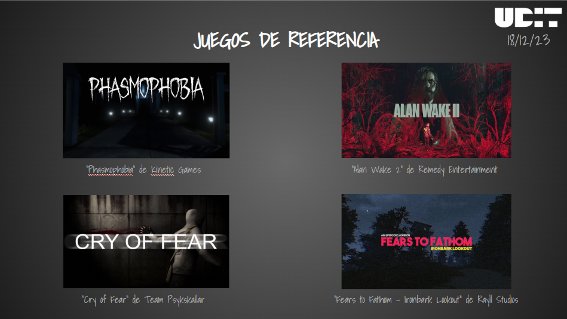

Progreso
Herramientas: Unreal Engine
Programación mediante Blueprints
Unreal Engine permite desarrollar videojuegos utilizando diferentes herramientas. Una de ellas son los Blueprints, un sistema de programación basado en nodos.
En este proyecto he aprendido a trabajar con comportamientos de enemigos, detección del jugador y sistemas de movimiento. Por ejemplo, un enemigo puede detectar al jugador y entrar en un estado de persecución y ataque contra el jugador.
Objetivos de aprendizaje
- Comprender el funcionamiento de los Blueprints.
- Crear comportamientos para personajes.
- Configurar detección y seguimiento de objetivos.
- Experimentar con las herramientas del motor
Crear una atmósfera de un juego de suspense generó un reto adicional en el proyecto aumentando la dificultad a la hora de trasladar al jugador a tener la sensación de persecución y obtención de recursos para sobrevivir.
Nos basamos en juegos como Alan Wake II, y Fears to Fathom que consiguen la ambientación que buscabamos para nuestro proyecto.
Trailer
El video muestra un trailer de Progreso.
Muestras de audio
El sonido usado para nuestro videojuego es de libre uso
Mapa interactivo de referencias
La siguiente imagen contiene diferentes zonas seleccionables que permiten consultar información sobre las referencias utilizadas en este proyecto.

Phasmophobia
Videojuego de terro cooperativo desarrollado por Kinetic Games.
Alan Wake 2
Videojuego de terror y supervivencia desarrollado por Remey Entertainment
Cry of Fear
Videojuego de terro psicológico desarrollado por Team Psyksakllar
Fears to Fathom
Serie de terror episódico desarrollado por Rayll Studios